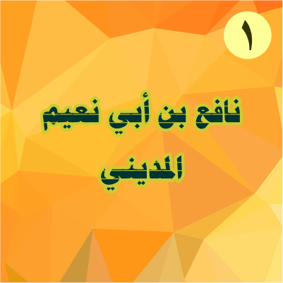

1. Nāfi‘
أَبُوْ رُوَيْمٍ نَافِعُ بْنُ عَبْدِ ٱلرَّحْمٰنِ بْنِ أَبِيْ نُعَيْمٍ ٱللَّيْثِيُّ (مَوْلَاهُمْ) ٱلْمَدَنِيُّ
+70—169 H
Biasa disebut Nāfi‘ bin Abī Nu‘aim, nisbat kepada kakeknya. Keluarganya berasal dari Esfahan. Aż-Żahabī memperkirakan kelahirannya setelah tahun 70 H, di masa pemerintahan ‘Abdul-Malik bin Marwān. Ibnul-Jazarī menggambarkan sosok Nāfi‘ sebagai pria dengan kulit gelap, atau bahkan hitam. Sangat hitam. Tapi di balik itu, Nāfi‘ adalah pria dengan wajah cerah, ceria, humoris, dan santun.
“Bagaimana tidak? Rasulullah telah menjabat tanganku. Dan, kepadanyalah aku mengaji (dalam mimpi, —red),” jawab Nāfi‘ ketika Isḥāq al-Musayyabī terkagum dengan keceriaan-wajah dan kesantunan Nāfi‘.
Jika berbicara, tercium semerbak aroma misik dari mulutnya. Padahal, Nāfi‘ tidak pernah memakai parfum. Hal ini sebenarnya juga tidak lepas dari peran Rasulullah. Nāfi‘ bercerita kepada salah satu murid ngajinya, “Aku bermimpi Rasulullah. Dia mengaji (al-Quran) pada mulutku. Sejak itulah aroma ini tersebar dari mulutku.”
Tak seorangpun yang meragukan kepandaian Nāfi‘ dalam bidang qiraah. Meskipun Ibnu Ḥanbal tidak terlalu salut dengan kualitas hadis Nāfi‘, tapi dia tetap menganggap qiraah penduduk Madinah sebagai pilihan pertama. Baru setelah itu qiraah ‘Āṣim. Mālik bin Anas berkata, “Qiraah Nāfi‘ adalah sunnah.” Ibnu Mujāhid berkata, “Guru ngaji di Madinah setelah generasi tabiin adalah Nāfi‘.” Laiṡ bin Sa‘d berkata, “Aku berhaji pada tahun 113 H. Saat itu orang-orang berkata, ‘Panutan orang-orang dalam qiraah adalah Nāfi‘.’” Menurut Qālūn, salah satu muridnya, Nāfi‘ menjadi imam masjid Nabawi selama 60 tahun.
Dalam membaca al-Quran, Nāfi‘ lebih sering melakukannya dalam salat. Hal ini bermula ketika ‘Aun bin ‘Abdillāh mendapati Nāfi‘ mengaji sambil duduk.
“Nak… kapan kau akan mengaji berdiri? Jika sudah renta? Sakit-sakitan?” Tegur ‘Aun.
Sejak saat itu, jika aku mengaji sambil duduk-duduk seakan-akan ‘Aun berdiri di hadapanku.
Nāfi‘ diberkati umur panjang yang membuat namanya semakin tenar. Dalam Gāyatun-Nihāyah-nya Ibnul-Jazarī menjelaskan bahwa Nāfi‘ menjadi guru ngaji cukup lama; 70 tahun lebih. Itu berarti dia menjadi guru ngaji sejak sebelum tahun 100 H, atau ketika umurnya belum genap 30 tahun. Bahkan, dalam al-Muntaẓam Ibnul-Jauzī menulis bahwa Nāfi‘ menjadi guru ngaji sekitar 100 tahun. Namun, riwayat lain yang bersumber dari Abū Qāsim al-Hużalī, sebagaimana dikutip oleh aż-Żahabī, Nāfi‘ baru memulai mengaji kepada beberapa guru pada tahun 95 H. Al-Hużalī memperkirakan Nāfi‘ menjadi guru ngaji pada tahun 120-an. Pun begitu, semua sepakat bahwa Nāfi‘ sudah menjadi rujukan masyarakat bahkan ketika guru-gurunya masih hidup.
Sebelum akhirnya mempunyai pilihan sendiri dalam qiraah, sebelumnya Nāfi‘ telah mengaji kepada beberapa ahli qiraah Madinah. Ada lima orang yang menjadi guru utama Nāfi‘. Mereka adalah ‘Abdur-Raḥmān bin Hurmuz al-A‘raj, Abū Ja‘far Yazīd bin Qa‘qā‘, Syaibah bin Niṣāḥ, Yazīd bin Rūmān, dan Muslim bin Jundab. Selain itu, Nāfi‘ juga mengaji kepada Ṣāliḥ bin Khawwāt, Aṣbag bin ‘Abdul-‘Azīz, ‘Abdur-Raḥmān bin Qāsim bin Muḥammad bin Abī Bakar, dan az-Zuhrī. Mereka adalah generasi yang mengaji kepada murid-murid Ubayy bin Ka‘b. Di samping itu, Nāfi‘ juga mengaji kepada 70 tabiin lain.
Dalam menetapkan qiraah pilihannya, Nāfi‘ memilih qiraah (bacaan) yang lebih banyak dipakai para gurunya. Namun, pada dasarnya qiraah pilihan Nāfi‘ tidak jauh beda dengan qiraah Abū Ja‘far, salah satu gurunya. Hal ini sesuai dengan pengakuan Nāfi‘ sendiri kepada al-Aṣmu‘ī, muridnya, “Saya (hanya) meninggalkan 70 ḥurūf dari qiraah Abū Ja‘far.”
Nāfi‘ tidak terlalu kaku dan ketat ketika ada yang mengaji kepadanya. Dia tahu bahwa dalam satu ayat terkadang bisa dibaca dengan beberapa varian. Kecuali, jika orang tersebut berkata, “Aku ingin mengaji sesuai dengan qiraah pilihanmu,” maka Nāfi‘ akan mengajar sesuai dengan qiraah pilihannya.
Murid sangat berperan melestarikan qiraah pilihanya adalah ‘Īsā bin Mīnā (Qālūn) dari Madinah dan ‘Uṡman bin Sa‘īd (Warasy) dari Mesir. Muridnya yang lain adalah Isḥāq bin Muḥammad al-Musayyabī, Mālik bin Anas, Muḥammad bin ‘Umar al-Wāqidī, ‘Abdur-Raḥmān bin Abiz-Zinād, Ibrāhīm bin Wahab, Abū Qarrah Mūsā bin Ṭāriq al-Yamānī, ‘Abdul-Malik bin Qarīb al-Aṣmu‘ī, Abū ‘Amr bin ‘Alā’, Laiṡ bin Sa‘d, Gāzī bin Qais al-Andalusī, dan masih banyak lagi.
Nāfi‘ meninggal pada tahun 169 H. Sampai saat ini, qiraah Nāfi‘ riwayat Warasy masih banyak dibaca (menjadi bacaan standar) di Maroko dan sekitarnya.[]
Selengkapnya...